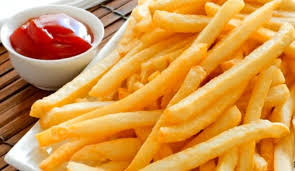
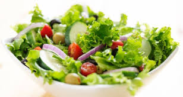
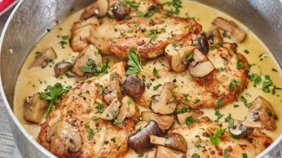

 Pomes
Description:
I will describe you to how to cook fried potatoes in easy and quick way
Details:
Peel potatoes and wash them. Slice potatoes in shape you like.
Fill a pan with oil and wait till oil to be fiery. test one piece of slice to test fiery of oil
Take out the potatoes befor they turning into the brown color.
Serving:
We recomment consume this meas when it is still hot and serve it with tomatoes souce.
Notes:
Do not put too much potatoes in pan in one session. Do it in small amount.
Cooking Time:
Appx 10 min for each session
Ingredients:
 Salad
Description:
I will describe you to how to prepare salad in easy and quick way
Details:
Wash the vegetables with planty of wather. Slice all vegetable small pices and put each of them in a diffrent can.
Compose and mix them in bigger can. Add just some oliven oil chees and salt on the salad
Serving:
Notes:
Cooking Time:
Appx 40 minutes
Ingredients:
 Chicken with rice
Description:
I will describe you to how to prepare chicken with rice in easy and quick way
Details:
Bring the rice and water to a boil in a saucepan over high heat. Reduce heat to medium-low,
cover, and simmer until the rice is tender, and the liquid has been absorbed, 20 to 25 minutes. Set rice aside.
Serving:
Serve this meal with white wine and warm.
Notes:
The nutrition data for this recipe includes the full amount of the breading ingredients.
The actual amount of the breading consumed will vary.
Cooking Time:
Appx 40 minutes
Ingredients: